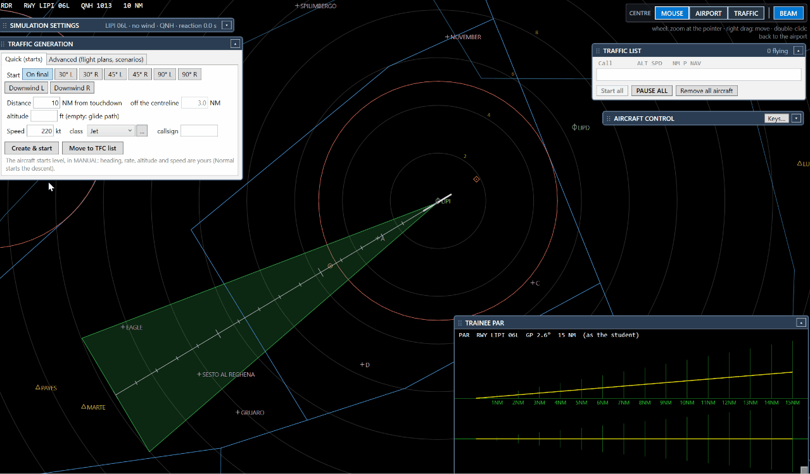
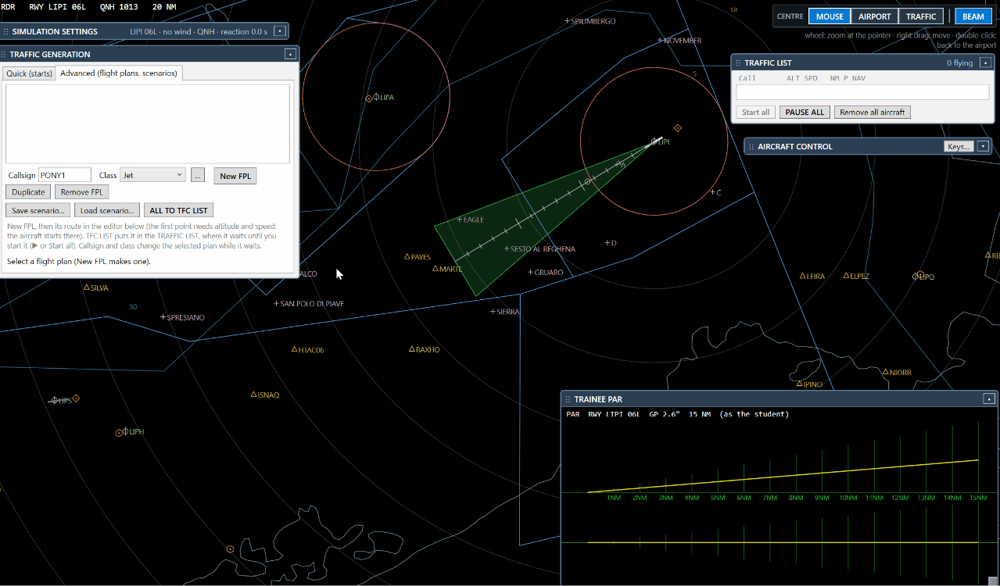
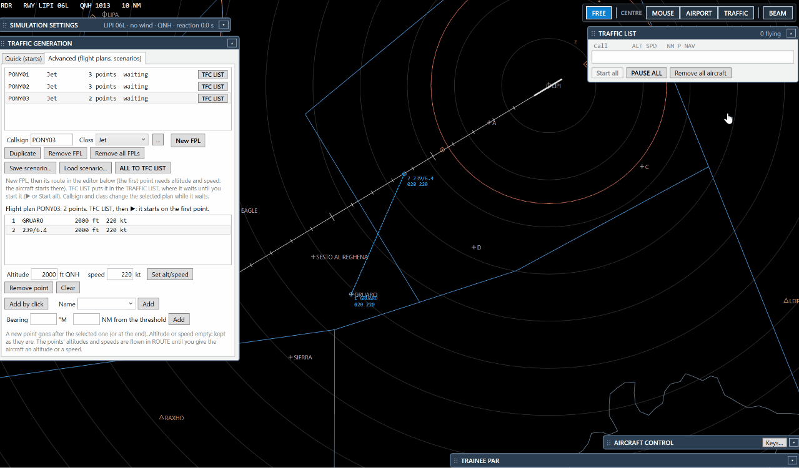
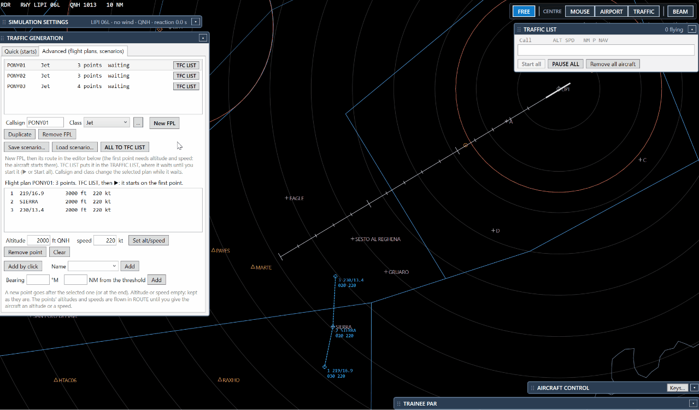
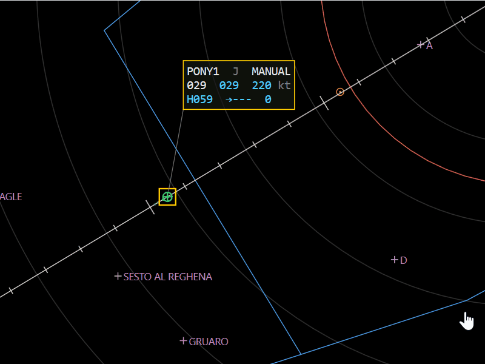
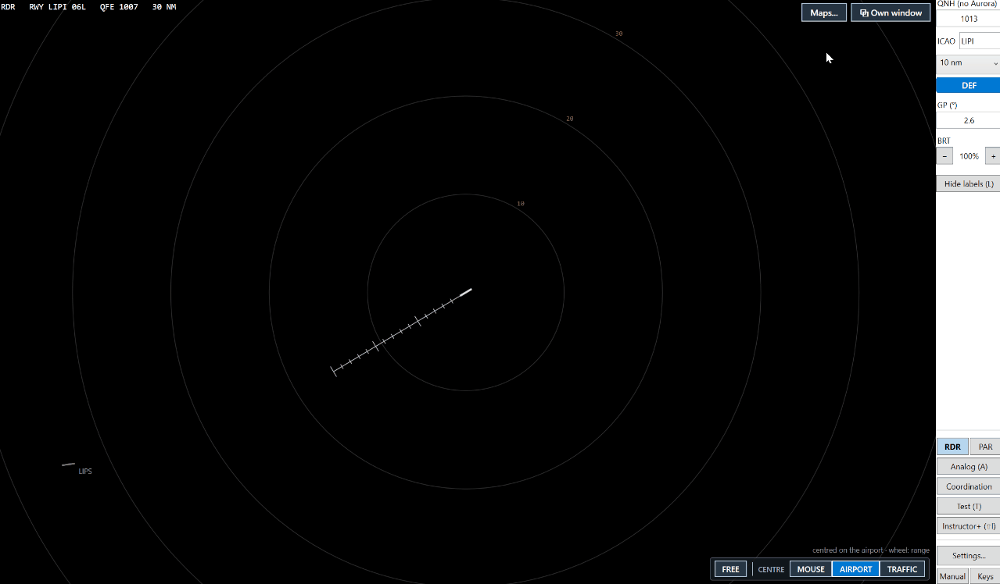
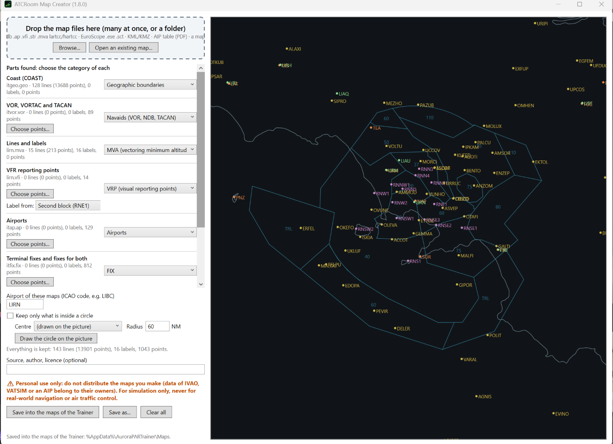

Teach the
approach
AuroraPAR v2 with an instructor's station. The Instructor+ flies simulated aircraft on a radar of its own: flight plans clicked on the map, scenarios to repeat, commands on the label, a macro keyboard. The student works on the PAR and on the surveillance radar RDR, with maps made by ATCRoom Map Creator. Same PC, or two PCs far apart. With IVAO traffic, mixed, or simulated only.
Version 1.0.0, for Windows 64-bit, with ATCRoom Map Creator. Free, open source (MIT). Works with or without IVAO's Aurora: a third-party add-on, not made, endorsed or supported by IVAO. For flight simulation only, never for real navigation or air traffic control.

Everything the instructor needs






On one PC, or on two PCs far apart
On one PC with two monitors, the Instructor+ on one and the student's PAR on the other. On two PCs, also in two different cities: the instructor makes a lesson code, the student types it, and the simulated aircraft travel through the internet (the public relays of the coordination panel: nothing to install, no port to open). The Instructor+ follows the student's runway and shows what the student's PAR really sees. Talk as usual, on Discord, TeamSpeak or the phone.
IVAO only
Each PC with its own Aurora: the student controls real traffic, the instructor watches.
Mixed
The student on IVAO with Aurora, plus the simulated aircraft of the instructor.
Simulated only
No Aurora needed: the instructor gives the traffic, the QNH and the wind.
Up and running in minutes
Download
Get the zip of the Trainer from its release page, check the SHA-256 and unzip it anywhere. Nothing to install.
Open the Instructor+
Shift+I or the Instructor+ key. Quick: On final, Create & start, and the first aircraft is on the student's PAR.
Make your maps
Optional: drop your own map files into ATCRoom Map Creator, then Maps… on the RDR.
Teach
Plans, scenarios, commands: the eight tutorials show each step.
FAQ
Is it a different program from AuroraPAR v2?
Yes: AuroraPARTrainer.exe, with its own settings, beside AuroraPAR v2 if you have it. It contains the whole PAR of AuroraPAR v2, plus the RDR, the Instructor+ and ATCRoom Map Creator.
Do I need IVAO or Aurora?
No. Without Aurora the Trainer works with simulated aircraft only, and the QNH and wind are typed by hand or taken from the internet (From METAR). With Aurora connected, the real traffic and the simulated aircraft are shown together.
Are the simulated aircraft sent to IVAO?
Never. They exist only in the Trainer (on the instructor's PC and, in a lesson between two PCs, on the student's).
What does the student need for a lesson between two PCs?
The Trainer and the lesson code of the instructor. Whoever has the code can see the lesson: make a new code for each lesson. Guide 14
Can I share the maps I make?
No. The maps made with ATCRoom Map Creator come from data of IVAO, VATSIM or an AIP, which belong to their owners: they are for your own use only, for simulation only, never for real navigation or air traffic control.
Windows says "Windows protected your PC".
The program is not signed with a paid certificate, so SmartScreen warns the first time. Click More info → Run anyway. Compare the SHA-256 of the zip with SHA256SUMS-Trainer.txt on the release page.